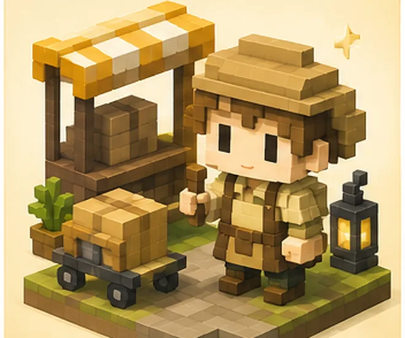
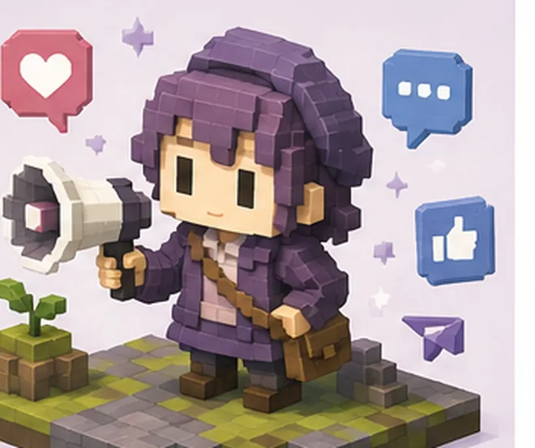
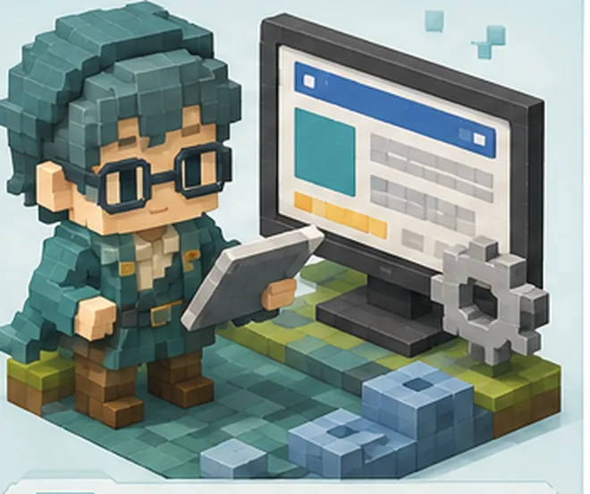
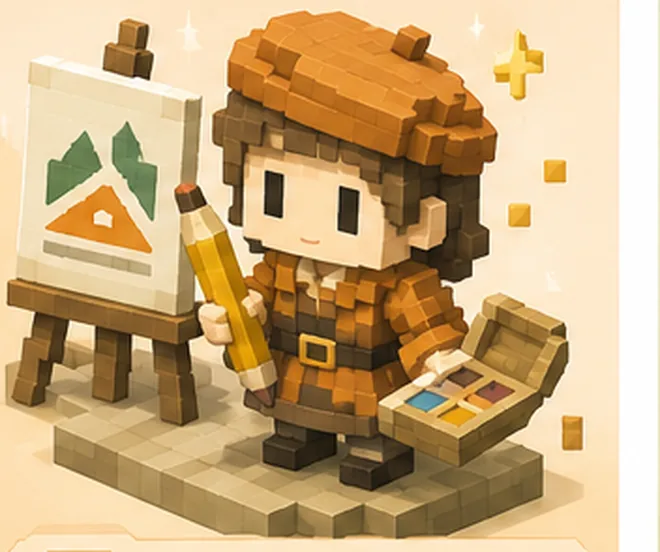

Type 03

黙々と仕上げる人
03
動画編集
EDITOR
初収益まで 1〜2ヶ月
黙々と手を動かす時間が、そのまま単価になるタイプです。
WHY / 向いている理由
—作業中は誰とも話さない。ひとりで没頭できる時間が長い
—カット・テロップ・音の調整と、やることがはっきりしている
—需要が多く、単価1本5,000円〜3万円と幅がある
CAUTION / つまずきやすい点
拘束時間が長い。1本あたり何時間かかったかを必ず記録して。
FIRST STEPS / 最初の3手
1編集ソフトを1つ決めて、好きな動画を1本まるごと真似して作る
21〜2分のポートフォリオを2本つくる
3SNSやクラウドソーシングで「テロップ入れのみ」の案件から受注
OTHER TYPES / ほかのタイプ

01物販・せどり 02Webライター
04SNS運用代行 05ブログ・アフィリエイト
05ブログ・アフィリエイト

06Webサイト制作
07バナー・ロゴ制作 08コンテンツ販売
08コンテンツ販売
おすすめ副業診断テスト